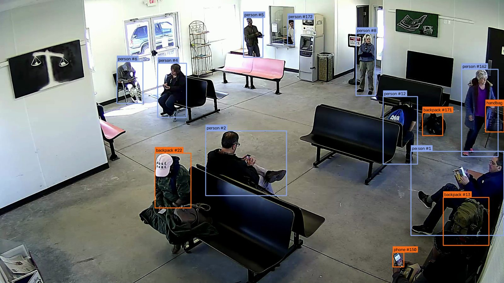
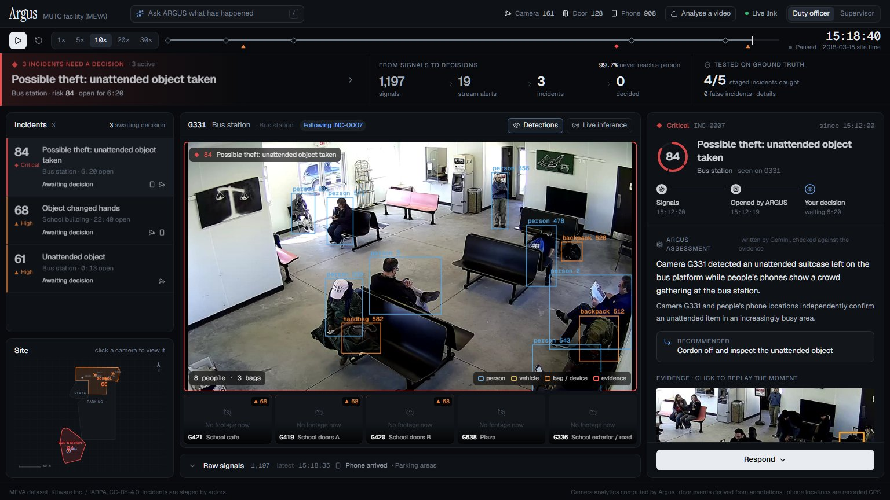
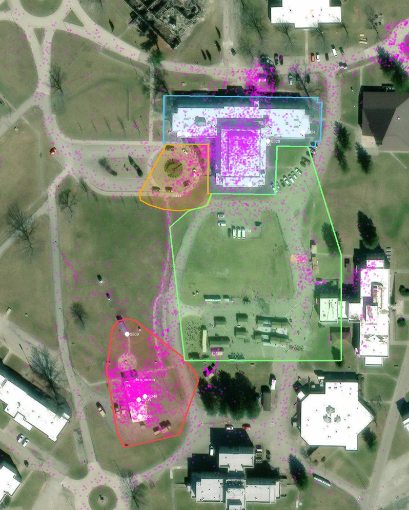

Argus is a situational-awareness layer for security control rooms. It reads the cameras and sensors a site already owns, fuses weak signals that share a place and a minute, and hands a human a handful of ranked, explained incidents instead of a wall of alerts.

Real footage, real output: Argus's detector and tracker on the MEVA bus-station camera. Every box is what the system saw, not a mock-up.
Security teams are not short of cameras or sensors. They are short of attention. Every system raises its own alarms on its own screen, and the real threat gets buried.
alerts reach the average security operations team every day
of them are ignored, buried by the rest
Physical security has the same wall.
One corporate control room cut its false alarms by 94% only after automating triage. On a campus, the people watching the screens are a handful, and the threat rarely sits on a single screen.
Sources: Vectra AI, 2023 State of Threat Detection (survey of 2,000 SOC analysts); Ambient.ai, ServiceNow customer case study.
Each signal on its own is noise. The same place and the same minute, confirmed by independent sources, is an incident.
No training and no labels. Detection and scoring are deterministic and explainable; the language model only writes the explanation.
Multi-camera CCTV, door activity and device location, normalised into one event schema.
YOLO11 and ByteTrack on one laptop GPU; rules and rolling baselines turn tracks into events.
Signals in the same area within two minutes join one incident; each source counts once.
A transparent 0 to 100: severity, confidence, area criticality, corroboration, time, feedback.
Gemini writes a two-line brief; it cannot create, hide or re-rank incidents, and every line is checked against the evidence.
A human acknowledges, escalates or dismisses; every action is written to a tamper-evident log.
Flip the event stream between every per-stream alert and what Argus actually surfaces.
Each incident breaks its score into the factors behind it. No black box.
Click any piece of evidence and the camera that saw it jumps there, with the object outlined.
Upload a clip and the same detector, rules and fusion run on it, with detections drawn on the video.
The detector runs in real time at 30 frames a second on a single laptop GPU.
No face recognition, no identity inference; people are track numbers, and briefs work offline from a cache.

The Argus console at 15:18 in the MEVA replay: the bus-station incident is on the main camera, with its brief, recommended action and response progress.
Thirty minutes, six cameras, one facility: the MEVA dataset's 15 March 2018 recording, scored against its own human ground truth.
staged incidents caught: two thefts in the cafe, a theft and an abandoned package at the bus station
false incidents: of two stray camera alerts, fusion kept one below the incident line and folded the other into a real incident
what siloed thresholds would page, against what Argus raises
precision of the video door sensor on indoor doors, with recall 0.75
live detection and tracking on one RTX 5060 laptop GPU (13 to 23 ms a frame)
miss: a black purse on a black bench, which the detector never sees. We report it.
| Measure | Result |
|---|---|
| Staged incidents caught | 4 / 5 (cafe thefts 14:53:38 and 14:54:18; bus-station theft 15:13:30 and abandonment 15:18:07) |
| False incidents | 0 in 30 minutes across 6 cameras |
| Event funnel | 1,242 raw events → 20 per-stream alerts → 3 incidents |
| Door sensor, indoor doors | precision 0.54, recall 0.75 (±2 s against human door-open annotations) |
| Door sensor, all six cameras | precision 0.21, recall 0.52: exterior doors use a simpler rule that fires on people queueing near a door |
| Live inference | 30 fps, 13 to 23 ms per frame, YOLO11s at 960 px with FP16 |
Everything in the demo comes from MEVA (Kitware Inc. and IARPA): real multi-camera 1080p footage of a school, cafe, plaza and bus station, real GPS tracks from people on site, and human annotations.

Fusion areas over satellite imagery; magenta dots are real GPS fixes. Imagery © Esri, Maxar, Earthstar Geographics; footprints © OpenStreetMap contributors.
Every step is in the repository's commit history. Friday 25 September 2026, RV University, Bengaluru.